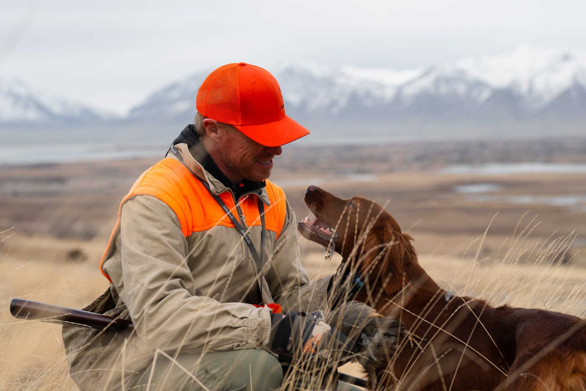

The program
Gunshy Fix Program
Designed by professional bird dog trainers to help dogs develop calm, confident responses to gunfire — in the house first, then in the field.
$39.99
Questions before you buy? Call or text Tyce, a working bird dog trainer, and he’ll help you decide if it’s right for your dog. (801) 380-9433
What’s included
- Lesson 1 — Music only32:31
- Lesson 232:31
- Lesson 332:36
- Lesson 432:31
- Lesson 532:31
- Lesson 632:31
- Lesson 732:31
- Lesson 8 — Shots only32:31
After purchase we send a download link to the email you give us. Play from your phone, Bluetooth speaker, car, or kennel system.
Why it exists
Tyce kept getting the same dogs: they would hunt, then the gun came out and they were done. In his training program, some dogs would work until the gun got around 30 or 40 yards, then shut down. He needed a way to back that pressure off at home — for people who also do not have birds, extra handlers, or a place to work it correctly.
You run the lessons. When the dog is itself around the sound, you go back to the field and try to break that wall so you can eventually shoot right around them.
We do not guarantee every dog can be fixed. We guarantee we will do everything in our wheelhouse to help. Patience and decent retrieve or bird drive give you a much better chance.
See it in action
What the lessons look like with real dogs
Watch the dog, not the lesson number. The dog should keep acting like itself — eating, playing, moving — while the sound plays.

About the trainer
Tyce Erickson, Payson, Utah.
Tyce is a working bird dog trainer. He runs Utah Bird Dog Training and built Gunshy Fix for owners who need to start the sound work at home — then take it back to birds and live field work.
He does not guarantee a cure. If the dog has decent retrieve or bird drive, and you are patient, there is often a real chance to rewire that negative association.
Start Gunshy Fix — $39.99
Eight MP3 lessons. Download to your phone and play on any speaker.
Start Gunshy FixQuestions before you buy? Call or text Tyce, a working bird dog trainer, and he’ll help you decide if it’s right for your dog. (801) 380-9433